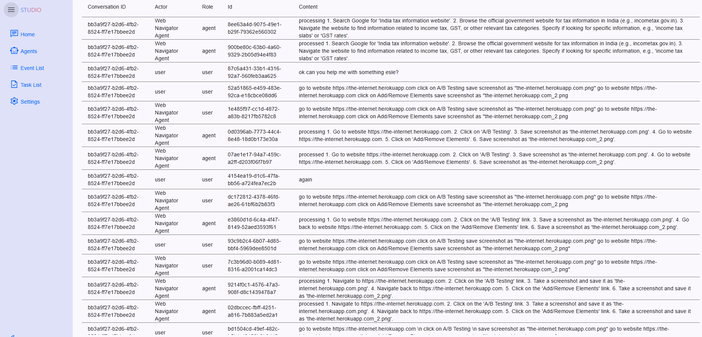
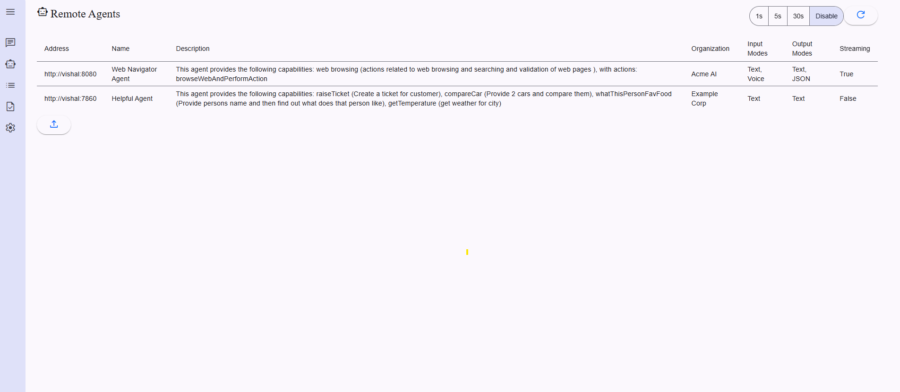
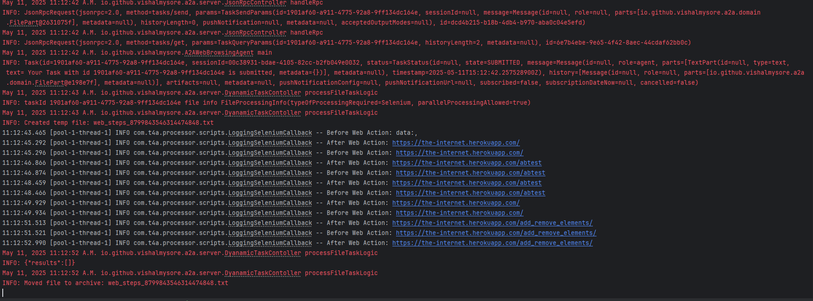
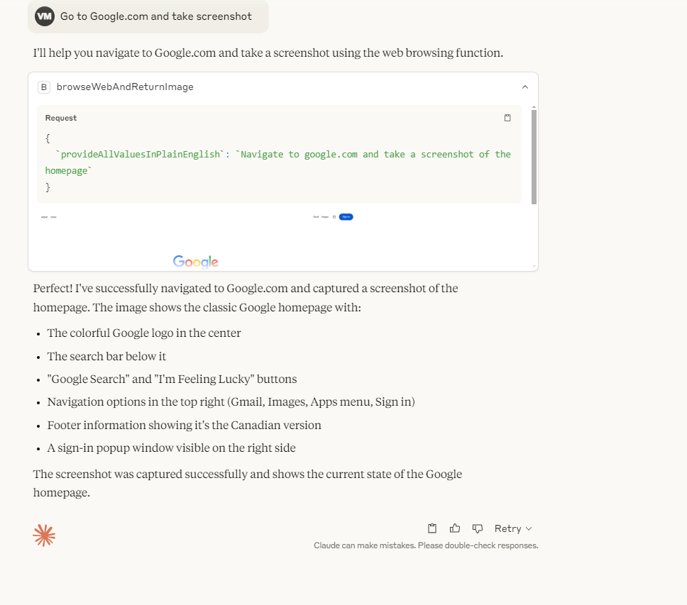
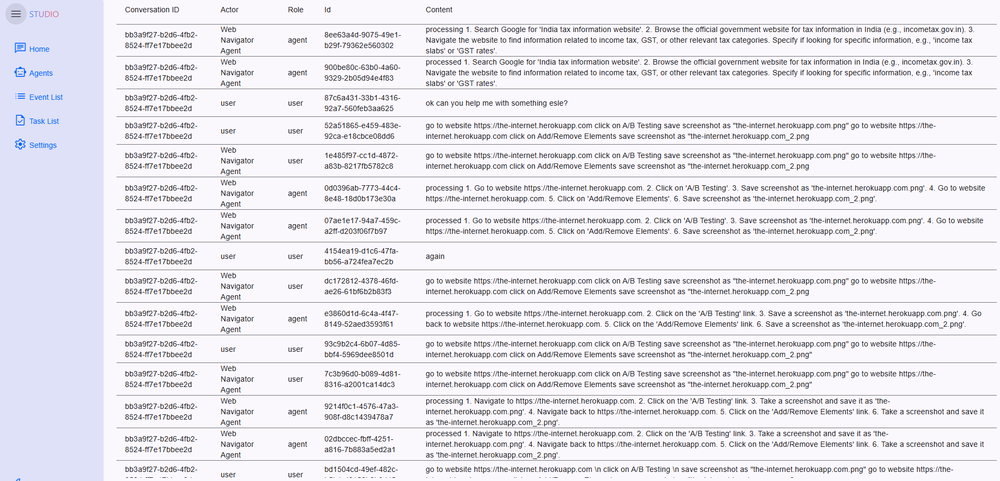
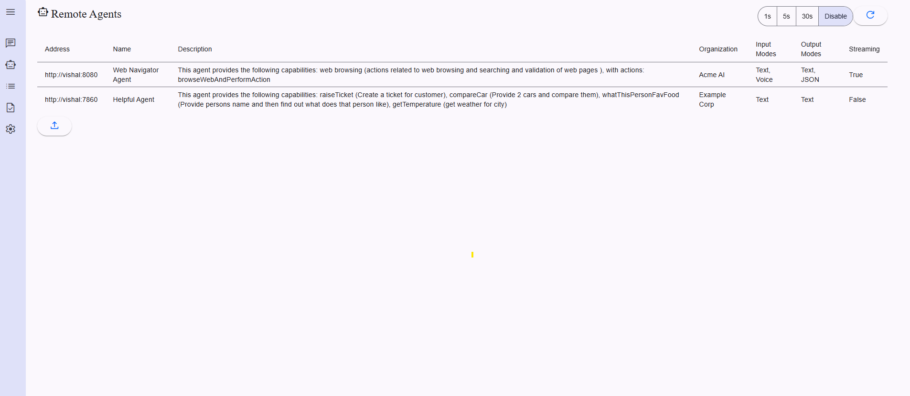
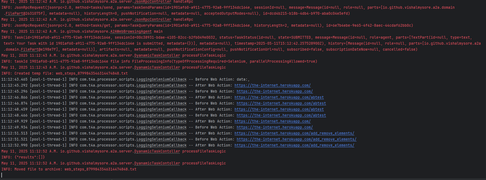
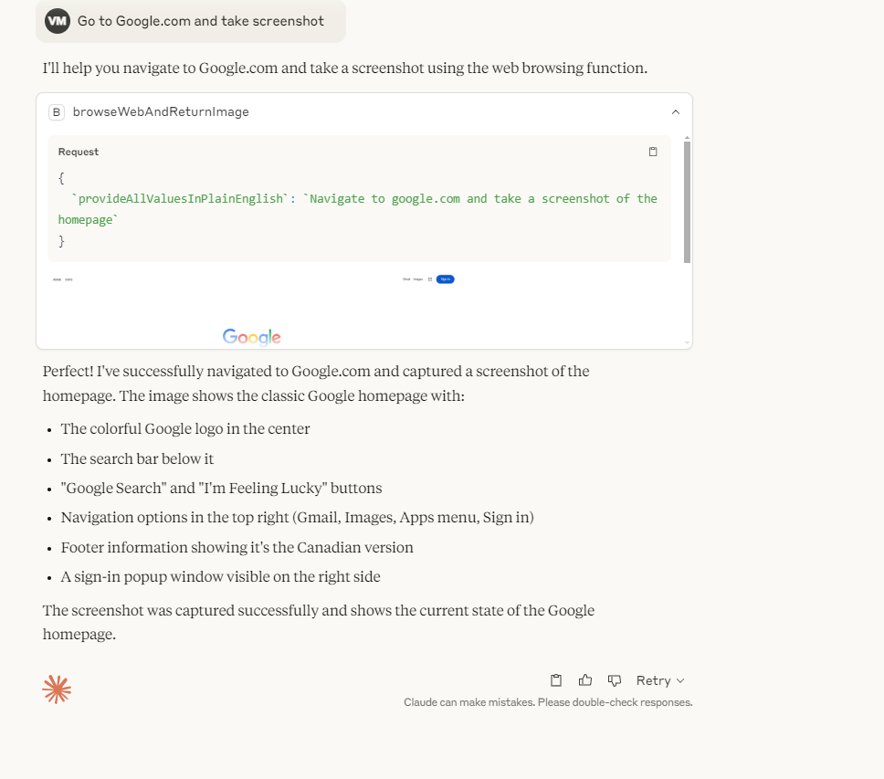

Interactive A2A MCP Workflow
 







Current View: Agent Interface
Click on the hotspots to learn more about each component.
Project Overview
This project demonstrates how to build A2A and MCP Compliant agents in Java and Selenium. You can run this project locally or connect to our demo server at vishalmysore-a2amcpselenium.hf.space
Powered by a2ajava
a2ajava is a Swiss Army knife for building agentic applications.
Multi-Protocol
Seamless integration with A2A (Agent-to-Agent) and MCP (Model Context Protocol)
Multi-Language
Support for Java, Kotlin, and Groovy
Multi-Platform
Compatible with Gemini, OpenAI, Claude, and Grok
Multi-Integration
Out-of-the-box support for Selenium, human-in-the-loop workflows, and multi-LLM voting
Quick Links
-
A2A Agent Card:
View Agent Card -
MCP Connector Guide:
Read the Guide
Configuration
Add the following configuration to your Claude JSON:
{
"webbrowsingagent": {
"command": "java",
"args": [
"-jar",
"/work/a2a-mcp-bridge/target/mcp-connector-full.jar",
"http://localhost:7860/"
],
"timeout": 30000
}
}For connecting to the remote server:
{
"webbrowsingagent": {
"command": "java",
"args": [
"-jar",
"/work/a2a-mcp-bridge/target/mcp-connector-full.jar",
"https://vishalmysore-a2amcpselenium.hf.space"
],
"timeout": 30000
}
}You can also use the Node client to connect to the server as mentioned in the article.
Available Actions
Once connected, you will have access to the following actions:
@Action(description = "perform actions on the web with selenium and return text")
public String browseWebAndReturnText(String webBrowsingSteps) throws IOException {
CustomScriptResult result = new CustomScriptResult();
A2ASeleniumCallBack seleniumCallBack = new A2ASeleniumCallBack(result);
if(processor != null) {
try {
StringBuffer seperatedWebBrowsingSteps = new StringBuffer(processor.query(
"Separate the web browsing steps into individual steps just give me steps without any additional text or brackets {"
+ webBrowsingSteps + "}"
));
//you can create your own selenium processor which implements SeleniumProcessor
//SeleniumScriptProcessor script = new SeleniumScriptProcessor(new MyOwnSeleniumScriptProcessor());
SeleniumScriptProcessor script = new SeleniumScriptProcessor();
script.process(seperatedWebBrowsingSteps,seleniumCallBack);
return result.getLastData();
} catch (AIProcessingException e) {
throw new RuntimeException(e);
}
}
return "processing issues";
}@Action(description = "perform actions on the web with selenium and return image")
public String browseWebAndReturnImage(String webBrowsingSteps) throws IOException {
CustomScriptResult result = new CustomScriptResult();
A2ASeleniumCallBack seleniumCallBack = new A2ASeleniumCallBack(result);
if(processor != null) {
try {
StringBuffer seperatedWebBrowsingSteps = new StringBuffer(processor.query(
"Separate the web browsing steps into individual steps just give me steps without any additional text or brackets {"
+ webBrowsingSteps + "}"
));
SeleniumScriptProcessor script = new SeleniumScriptProcessor();
script.process(seperatedWebBrowsingSteps,seleniumCallBack);
return result.getLastScreenshotAsBase64();
} catch (AIProcessingException e) {
throw new RuntimeException(e);
}
}
return "processing issues";
}Customization
Custom Selenium Processor
You can customize the Selenium processor by implementing your own SeleniumProcessor interface. While MyOwnSeleniumScriptProcessor is mentioned as an example, the base processor is used in this implementation.
Selenium Callback
The callback is invoked before and after each task execution. You can customize the behavior by:
- Returning false from beforeWebAction to skip processing
- Implementing custom process logic in your SeleniumProcessor
Example Callback Implementation
@Log
public class A2ASeleniumCallBack implements SeleniumCallback {
private CustomScriptResult customResult;
public A2ASeleniumCallBack(CustomScriptResult customResult) {
this.customResult = customResult;
}
@Override
public boolean beforeWebAction(String lineToBeProessed, WebDriver driver) {
log.info("Processing line: " + lineToBeProessed);
try {
String html = driver.getPageSource();
customResult.addBeforeHtml(html);
byte[] screenshot = ((TakesScreenshot) driver).getScreenshotAs(OutputType.BYTES);
customResult.addScreenshot(screenshot);
} catch (WebDriverException e) {
log.info(e.getMessage());
}
return true;
}
@Override
public void afterWebAction(String lineProcessed, WebDriver driver) {
log.info("Processed line: " + lineProcessed);
try {
String html = driver.getPageSource();
customResult.addAfterHtml(html);
byte[] screenshot = ((TakesScreenshot) driver).getScreenshotAs(OutputType.BYTES);
customResult.addScreenshot(screenshot);
} catch (WebDriverException e) {
log.info(e.getMessage());
}
} @Override
public void handleError(String line, String errorMessage, WebDriver driver) {
// Log the error message you can take any action here like reprocessing the line
log.severe("Error processing line: " + line + " Error: " + errorMessage);
}
}